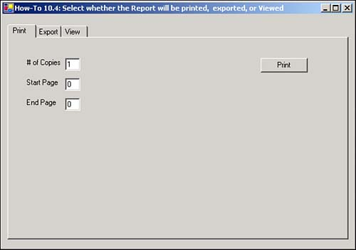
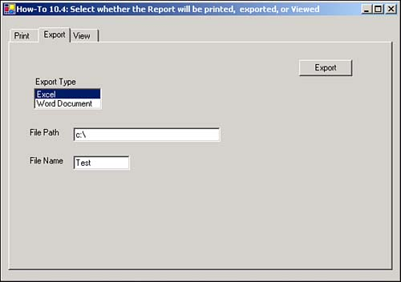

I know I can use the Crystal Report Viewer to print and export my reports, but I want to be able to have control over that, and maybe not even include the Viewer in some cases.
For this How-To, you will use a Tab control to display the three options for the user: Print, Export, and View (see Figure 10.18).

The first tab, Print, allows you to specify the number of copies to print, along with the starting and ending pages.
This page will use the PrintToPrinter method shown here:
Me.rdHowTo10_4.PrintToPrinter(Me.txtNumOfCopies.Text, False,
Me.txtStartPage.Text, Me.txtEndPage.Text)
The PrintOptions object, found on the ReportDocument, is very useful. The PrintOptions object has the following properties: PaperOrientation, PaperSize, PaperSource, PrinterDuplex, and PrinterName. You can set these properties either at design time using the property sheet, or at runtime using code.
When you're exporting using the Report document, you will be using the ExportOptions object. The ExportOptions object is made up of four other properties/objects:
DestinationOptions. This is made up of one of three possible objects: DiskFileDestinationOptions, ExchangeFolderDestinationOptions, or MicrosoftMailDestinationOptions.
ExportDestinationType. This gets or sets the export destination type. This will be DiskFile, ExchangeFolder, MicrosoftMail, or NoDestinationType.
ExportFormatType. This gets or sets the export format type. It can be one of the following: Excel, HTML32, HTML40, NoFormat, PortableDocFormat, RichText, or WordForWindows.
FormatOptions. This gets or sets the FormatOptions. It can be ExcelFormatOptions, HTMLFormatOptions, or PdfRtfWordFormatOptions.
To execute the export, you use the Export method of the DocumentReport object. You can see the page for exporting in Figure 10.19.

The View tab uses a CrystalReportViewer object on the tab page.
Open and run the Visual Basic .NET-Chapter 10 solution. Click on the button labeled How-To 10.4. Clicking on the tabs, you can see the three options you have to work with. Clicking on the Print button prints your report to the default printer. When you go to the Export tab and click the Export button, a message appears stating that the data has been exported. The last tab, View, displays the report in a Viewer.
Create a Windows Form. Then place a Tab control on your form.
Add pages for Print, Export, and View, using the TabPages property of the Tab control.
Drag on a ReportDocument object, and set it to point to the report you created in How-To 10.1. Then name your report document rdHowTo10_4.
Place the controls shown in Figure 10.18 and 10.19 onto the tab page with the properties set forth in Table 10.3.
|
Tab Page |
Object |
Property |
Setting |
|---|---|---|---|
|
|
Label |
Text |
# of Copies |
|
Label |
Text |
Start Page |
|
|
Label |
Text |
End Page |
|
|
TextBox |
Name |
txtNumOfCopies |
|
|
Text |
1 |
||
|
TextBox |
Name |
txtStartPage |
|
|
Text |
0 |
||
|
TextBox |
Name |
txtEndPage |
|
|
Text |
0 |
||
|
Button |
Name |
btnPrint |
|
|
Export |
Label |
Text |
Export Type |
|
Label |
Text |
File Path |
|
|
TextBox |
Name |
txtExportFilePath |
|
|
Label |
Text |
File Name |
|
|
TextBox |
Name |
txtExportFileName |
|
|
ListBox |
Name |
lstExportType |
|
|
Button |
Text |
btnExport |
|
|
View |
CrystalReportViewer |
Anchor |
Top, Bottom, Left, Right |
|
ReportSource |
rdHowTo10_4 |
Type Excel and Word Document into the Items collection of lstExportType.
Add the code in Listing 10.1 to the Click event of btnPrint.
Private Sub btnPrint_Click(ByVal sender As System.Object, _
ByVal e As System.EventArgs) Handles btnPrint.Click
Dim po As PrintDialog
Me.rdHowTo10_4.PrintToPrinter(Me.txtNumOfCopies.Text, False, _
Me.txtStartPage.Text, Me.txtEndPage.Text)
End Sub
Add the code in Listing 10.2 to the Click event of btnExport. This code tests the value of lstExportType and assigns the appropriate ExportFormatType and file extension (strExt). The DiskFileDestinationOptions information is supplied, and the Export method is called to complete the export.
Private Sub btnExport_Click(ByVal sender As System.Object, _
ByVal e As System.EventArgs) Handles btnExport.Click
Dim strExt As String
Try
With Me.rdHowTo10_4.ExportOptions
Select Case lstExportType.SelectedItem
Case "Excel"
.ExportFormatType = _
CrystalDecisions.[Shared].ExportFormatType.Excel
strExt = ".xls"
Case "Word Document"
.ExportFormatType = __
CrystalDecisions.[Shared].ExportFormatType.WordForWindows
strExt = ".Doc"
End Select
.ExportDestinationType = _
CrystalDecisions.[Shared].ExportDestinationType.DiskFile
Dim ddo As New CrystalDecisions.Shared.DiskFileDestinationOptions()
ddo.DiskFileName = Me.txtExportFilePath.Text & _
Me.txtExportFileName.Text & strExt
.DestinationOptions = ddo
End With
Me.rdHowTo10_4.Export()
MessageBox.Show("Report Exported!")
Catch excp As Exception
MessageBox.Show(excp.Message)
End Try
End Sub
As you can see, very little code is needed to provide a great deal of functionality.
Sometimes when you're using tools such as the Viewer in a tabbed form, the tab pages can become cluttered. If you want to limit the power of the Viewer or make it more streamlined, you can turn off the toolbar and group display by setting DisplayToolbar and DisplayGroupTree to False on the CrystalReportViewer.